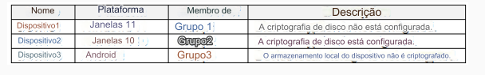
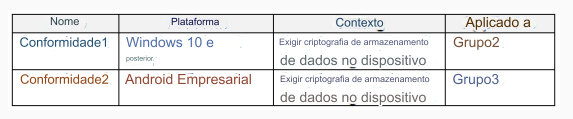
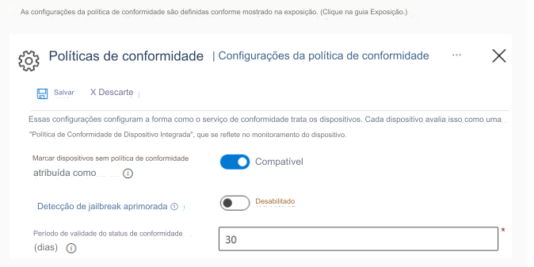
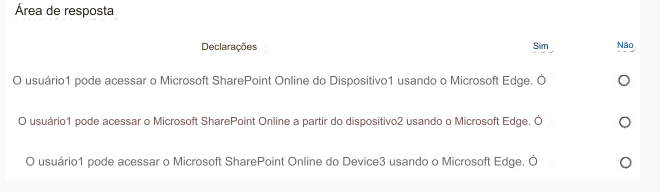

179- PONTO DE ACESSO
Você tem uma assinatura do Microsoft 365 que contém um usuário chamado User1.
A assinatura contém
dispositivos registrados no Microsoft Intune conforme mostrado na tabela a seguir.

O Microsoft Edge está disponível em todos os dispositivos.
O Intune tem as políticas de conformidade do dispositivo mostradas na tabela a seguir.


Você cria a seguinte política de acesso condicional:
• Nome: Política1
• Atribuições
• Usuários e grupos: Usuário1
• Aplicativos ou ações em nuvem: Office 365 SharePoint Online
• Controles de acesso
• Conceder: Exigir que o dispositivo seja marcado como compatível
• Ativar política: ativado
Para cada uma das afirmações a seguir, selecione Sim se a afirmação for verdadeira. Caso contrário, deixe em branco.
NOTA: Cada seleção correta vale um ponto.
